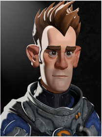
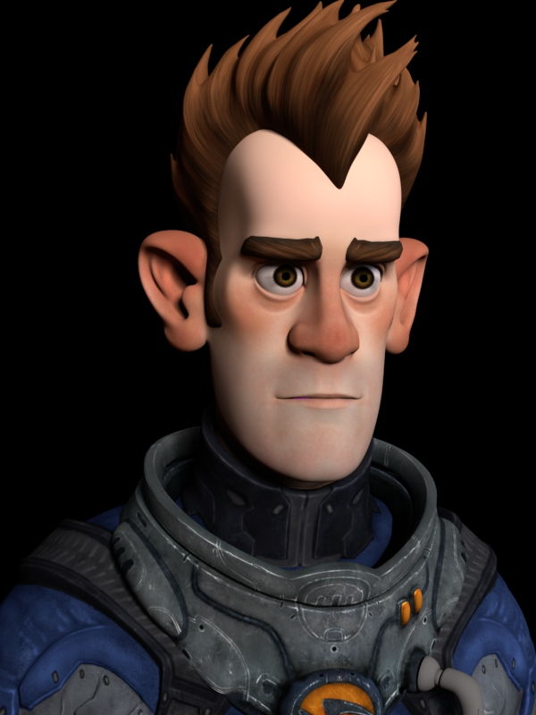
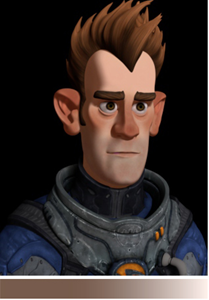
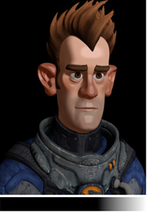
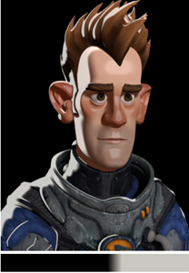
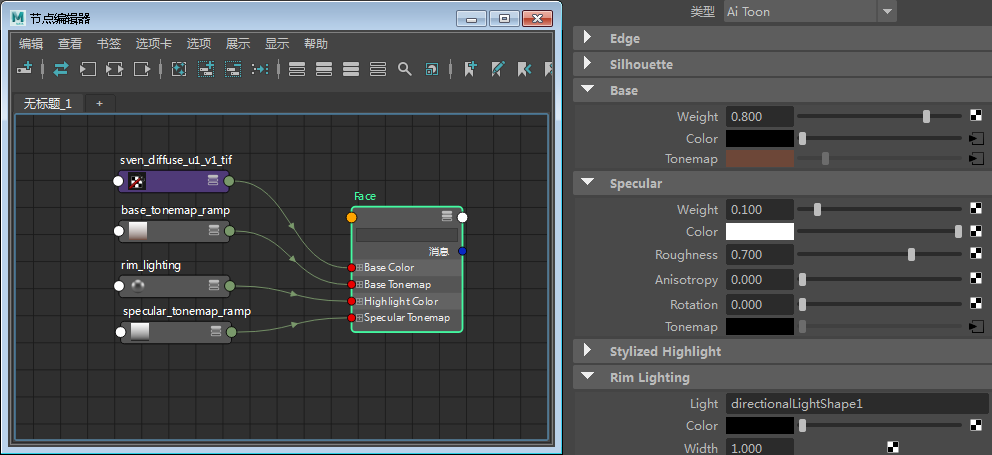
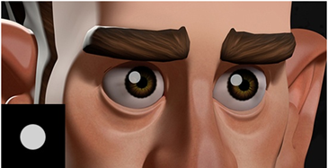
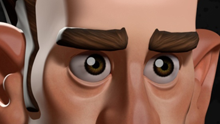
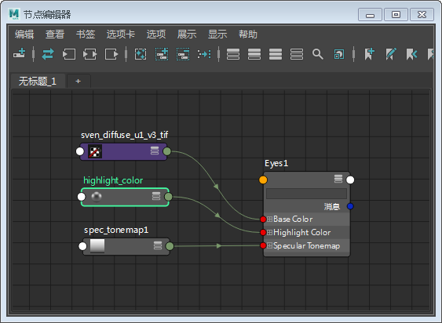

卡通着色和照明 Sven

在这个简短的制作教程中，我们将分步介绍如何使用卡通 着色器渲染上图。我们将介绍如何使用卡通 着色器的 rim_lighting、 base_tonemap、specular_tonemap 和 stylized_highlight 属性为星际英雄 Sven 创建“美术”类型的肖像！
注意：
要下载本系列教程的原始 Maya 场景文件，请单击此处。
指定卡通着色器
- 首先，将卡通着色器指定给头部、头发、眼睛和太空服。将相关的漫反射贴图连接到每个卡通着色器的 base_color。

基础色调映射（渐变）
- 创建类似如下的渐变并将其连接到已指定给 Sven 脸部的卡通着色器的 base_tonemap。

rampRGB -> base_tonemap
镜面反射色调映射（渐变）
- 将 specular_weight 减小到 0.1 左右，将 specular_roughness 增加到 0.7 左右。
- 创建一个渐变，并将其连接到 specular_tonemap。

rampRGB -> specular_tonemap
边缘照明
- 创建一个聚光灯，并将其放在从后面以某个角度照向 Sven 的位置。将其添加到“边缘照明 -> 灯光”(Rim Lighting -> Light)属性。
- 创建一个 rampRGB，并将其连接到 rim_lighting_color。

灯光 -> rim_lighting

脸部卡通着色网络
风格化高光
我们可以使用 stylized_highlight 在 Sven 眼睛上创建卡通风格高光。
- 创建一个聚光灯，并使其照向 Sven 的眼睛。隐藏灯光，使其不照亮 Sven。
- 将圆形渐变（类似如下）连接到眼睛着色器的 stylized_highlight_color， 然后将 stylized _highlight_size 增加到 0.8 左右。

stylised_highlight （镜面反射）
间接镜面反射
Indirect_specular （和 indirect_diffuse ）可以对卡通着色的外观产生精细效果。在本例中，indirect _specular 为 0 更适合眼睛着色器。

indirect_specular：0

眼睛卡通着色网络